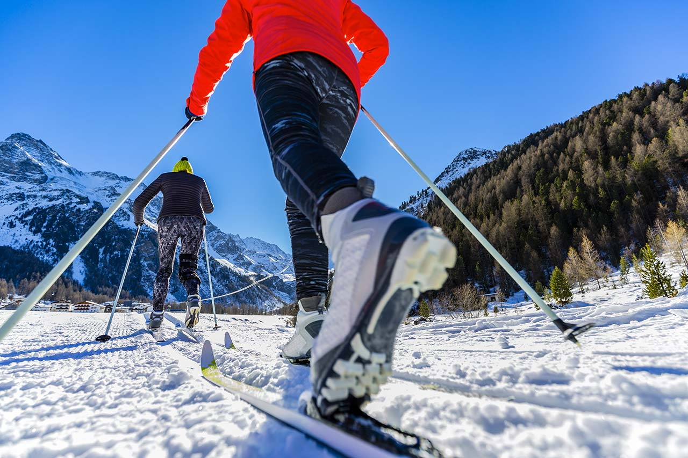
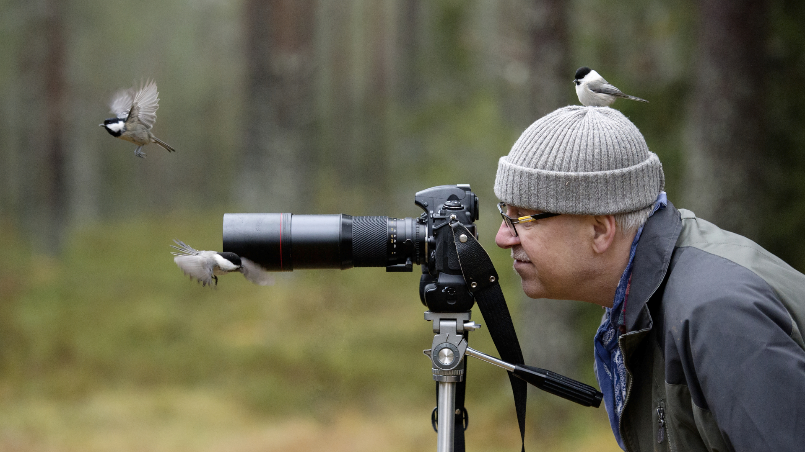

Parchi Nazionali
Parchi in primo piano
Scopri di più

Attività ed esperienze
Attività in primo piano


Scopri di più
Sport all'aria aperta
Parco Nazionale d’Abruzzo, Lazio e Molise
Possibilità di sci di fondo e ciaspolate in aree boschive.
Birdwatching
Parco Nazionale dell'Arcipelago Toscano
Uccelli marini e migratori, compresi gabbiano corso e falco pellegrino sulle falesie.